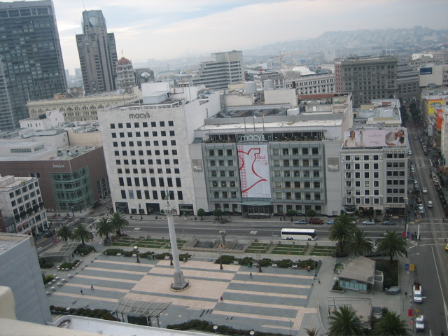

<--Previous Up Next-->

View to a Beagle I
Our room being just above a step back in the facade of the Sir Francis Drake, a stretch of roof and parapet limited our view. Fortunately it was possible to slip through the bathroom window to get closer to this panorama.
The day before, the Dixieland band playing the crab festival had conjured up the opening scene of The Conversation. Sunday morning was quiet, perfect for a little surveillance of our own ...